정육쇼케이스
정육쇼케이스 조명, 고기 색을 정직하게 살리는 선택법
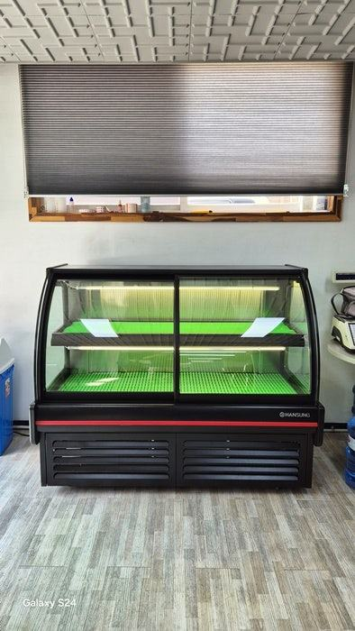
정육쇼케이스 조명은 고기를 붉게 보이게 하는 것보다 집에 가져가서 봐도 색 차이가 크지 않을 만큼 자연스럽게 살리는 것이 기본입니다. 여기에 열이 적은 LED인지, 손님 눈에 광원이 직접 보이지 않는 위치인지, 고장 났을 때 교체가 쉬운지까지 확인하세요.
안녕하세요. 정육점과 식육식당, 무인 정육 매장에 들어가는 고기 진열 냉장고를 만드는 한성쇼케이스입니다.
정육점 손님은 진열대 앞에 서서 몇 초 만에 고기 색을 보고 살지 말지를 정합니다. 그래서 정육쇼케이스 상담에서 조명은 사장님들이 가장 오래 고민하시는 항목 중 하나입니다.
그런데 고기를 붉게만 보이게 하면 될 것 같지만, 너무 진한 색 조명은 오히려 손님이 집에 가서 포장을 열었을 때 "매장에서 본 색과 다르다"는 인상을 남길 수 있습니다.
조명이 내는 열이 고기 표면을 말리는 문제도 있고요.
오늘은 정육쇼케이스 조명을 고를 때 색, 발열, 위치, 관리 네 가지 기준으로 무엇을 확인하면 좋은지 정리해 드리겠습니다.
1. 색은 자연스럽게 살리기
정육 진열에는 붉은 기를 살짝 더한 핑크 계열 조명을 많이 씁니다. 살코기의 붉은빛과 마블링의 흰 결이 또렷해 보여 먹음직스러운 인상을 줍니다.
다만 색을 지나치게 진하게 넣으면 지방까지 붉게 물들어 결이 흐려지고, 손님이 집에서 본 색과 차이가 커집니다.
매장 콘셉트가 깔끔한 분위기라면 백색 조명을 바탕으로 쓰고, 붉은 살코기 구역만 색감을 더하는 식으로 나눠 보는 것도 방법입니다.
- 조명을 켠 상태와 끈 상태로 같은 고기를 비교해 보세요.
- 마블링의 흰 결이 또렷하게 보이는지 확인하세요.
- 포장한 고기를 매장 밖에서 다시 보고 색 차이를 느껴 보세요.
2. 부위별로 구역 나누기
소고기 등심과 돼지 삼겹살, 닭고기, 양념육은 원래 색이 달라 같은 조명 아래에서도 보이는 느낌이 다릅니다.
진열 칸을 부위별로 나누면 구역마다 조명 밝기나 색을 조금씩 달리할 수 있습니다.
양념육처럼 색이 진한 상품은 밝기를 조금 올려 주고, 붉은 살코기는 색감을 살리는 쪽으로 맞추면 진열대 전체가 고르게 보입니다.
부위 구성을 상담 때 알려 주시면 칸 배치와 조명을 함께 잡아 드립니다.
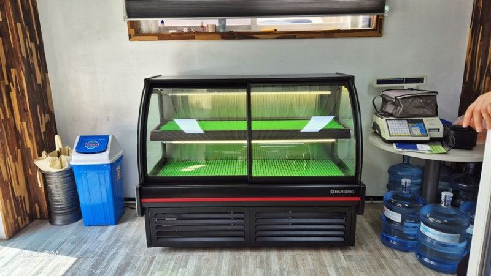
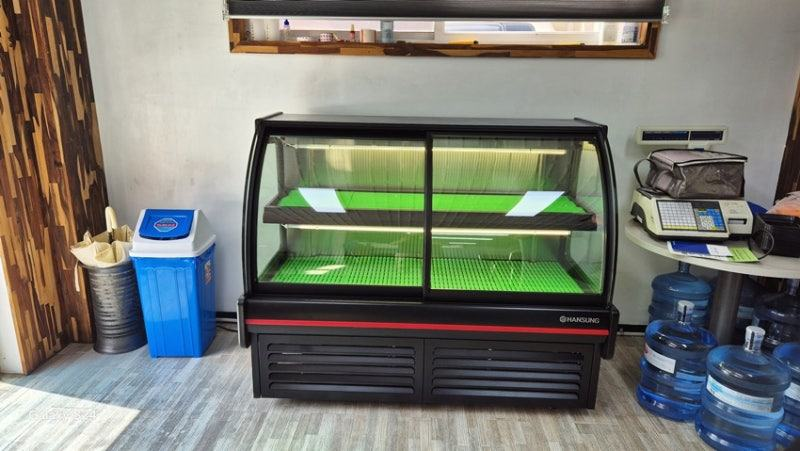
3. 열이 적은 조명과 위치
조명에서 나오는 열은 바로 아래 놓인 고기 표면을 말리고 색을 탁하게 만듭니다. 그래서 정육쇼케이스에는 발열이 적은 LED를 쓰고, 광원과 고기 사이 거리도 설계 단계에서 함께 봅니다.
위치도 중요합니다. 손님 눈에 광원이 그대로 보이면 눈이 부셔 오히려 고기가 잘 안 보입니다.
상단 프레임 안쪽에 숨겨 아래로 비추게 하면 유리 반사도 줄고 고기에만 빛이 모입니다.
4. 오래 켜 두는 매장일수록 관리
정육점은 영업시간 내내, 무인 정육 매장은 하루 종일 조명이 켜져 있습니다. 한쪽 조명이 나가면 그 칸 고기만 어둡고 오래돼 보이니 바로 바꿀 수 있어야 합니다.
제작 때 조명 교체가 쉬운 구조인지, 어디로 연락하면 되는지 확인해 두세요. 한성쇼케이스는 전국 240여 개 A/S 센터를 통해 조명 교체와 점검을 접수받고 있습니다.
- 조명 교체 방법을 설치 때 안내받으세요.
- 영업 마감 후에는 조명을 꺼 열을 줄이세요.
체크리스트
- 고기 색을 자연스럽게 살리는 조명 색
- 마블링 결이 또렷하게 보이는지
- 부위별 구역과 조명 배치
- 발열 적은 LED 사용 여부
- 광원이 손님 눈에 보이지 않는 위치
- 조명 교체 방법과 A/S 연락처
현장에서 자주 보는 경우: 중고 쇼케이스 조명이 매장 고기와 맞지 않을 때
창업 비용을 줄이려고 중고 정육쇼케이스를 먼저 들이신 사장님들께 자주 듣는 고민이 있습니다. 냉장은 되는데 조명 색이 고기와 어울리지 않아 진열대가 칙칙해 보인다거나, 사이즈와 색상이 정해진 기성품이라 매장 쪽을 쇼케이스에 맞춰야 했다는 이야기입니다.
중고 제품은 이전에 어떤 환경에서 어떻게 관리됐는지 알 수 없고, 냉매 라인이나 콤프레셔 상태는 겉으로 확인하기 어렵습니다.
새로 맞춰 제작하면 사이즈와 단차, 색상, 조명까지 매장에 맞춰 고를 수 있고, 출고 제품에는 1년 무상 A/S와 전국 서비스망 관리가 함께 들어갑니다.
조명 하나 때문에 진열대 전체 인상이 바뀌는 업종이라, 이 부분까지 비교해 보시길 권해 드립니다.
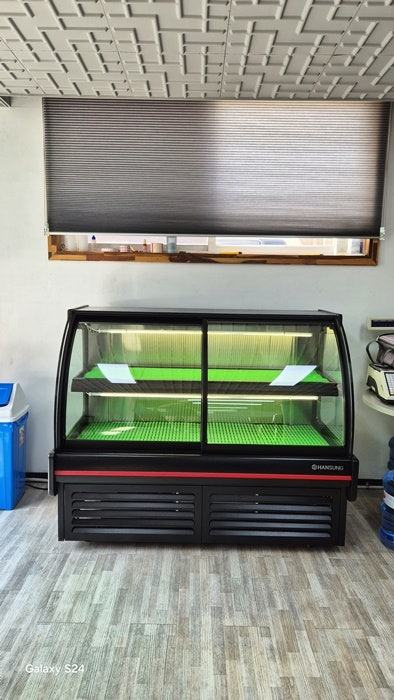
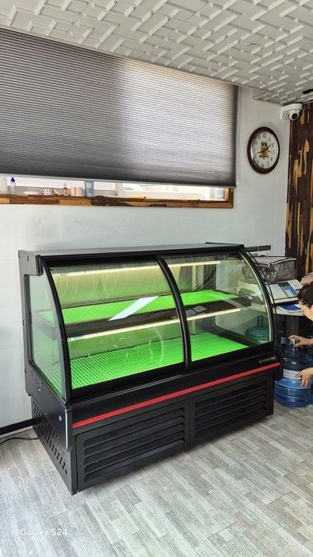
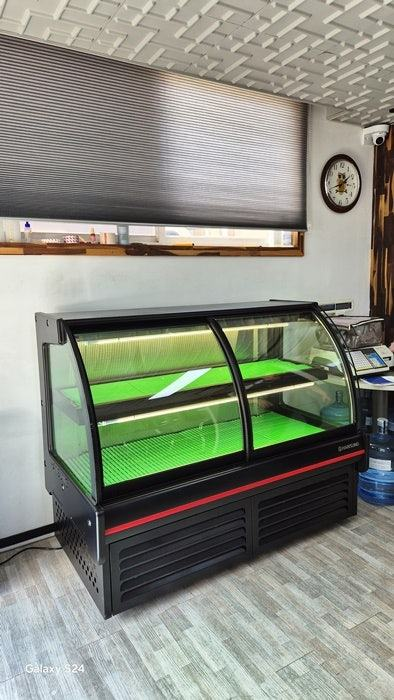
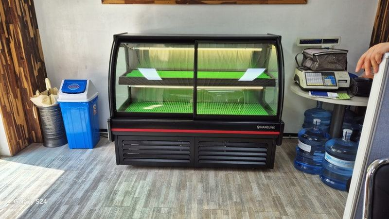
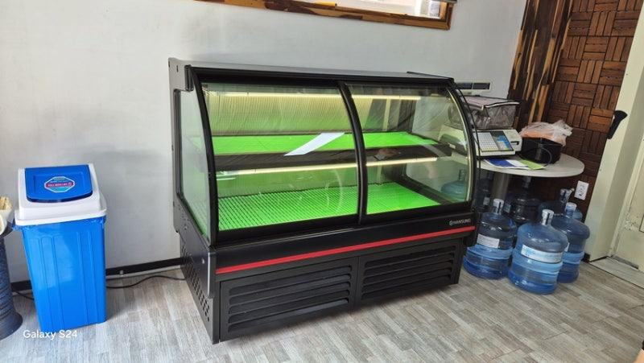
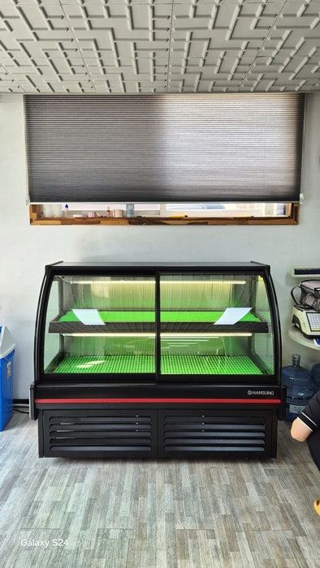
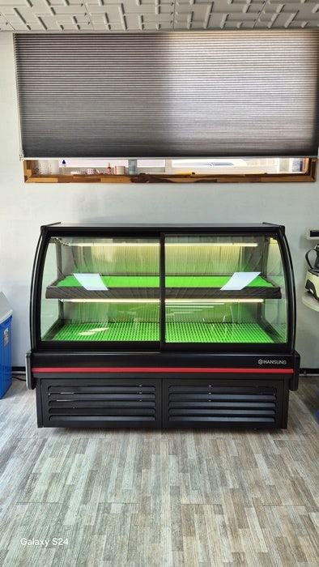
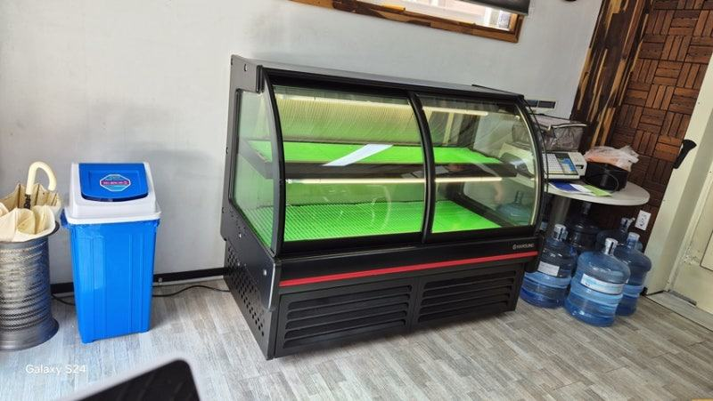
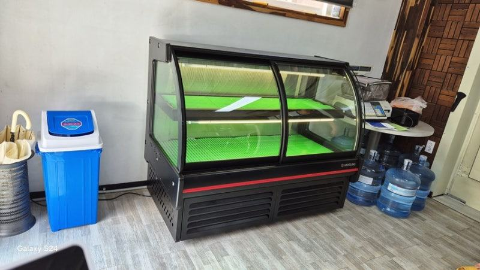
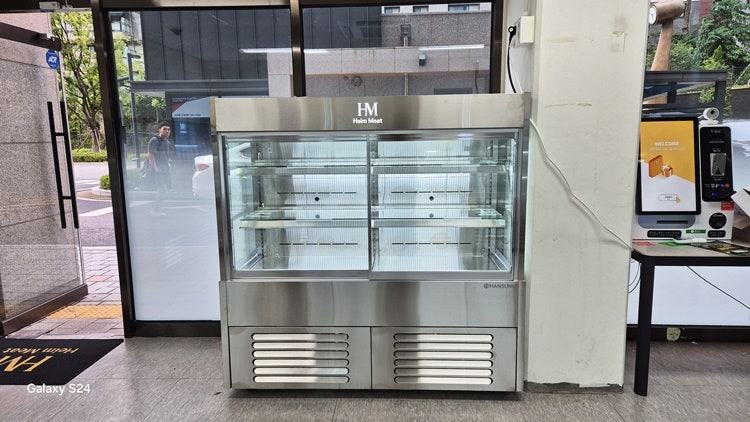
자주 묻는 질문
정육쇼케이스 조명은 꼭 붉은색이어야 하나요?
붉은 기를 살짝 더하면 살코기가 먹음직스러워 보이지만, 너무 진하면 지방 결이 흐려지고 손님이 집에서 본 색과 차이가 납니다.
고기 색을 자연스럽게 살리는 정도로 맞추시는 게 좋습니다.
조명 때문에 고기가 마를 수 있나요?
광원의 열이 고기 표면에 닿으면 마르고 색이 탁해질 수 있습니다. 발열이 적은 LED를 쓰고 광원과 고기 사이 거리를 확보하면 이런 문제를 줄일 수 있습니다.
이미 쓰고 있는 쇼케이스 조명만 바꿀 수 있나요?
구조에 따라 가능한 경우가 있습니다. 제조사와 모델, 현재 조명 사진을 보내 주시면 교체 가능 여부를 먼저 확인해 드립니다.
매장 조건에 맞춰 만드는 한성쇼케이스
원하시는 제품 사진과 설치할 공간 사진만 보내 주셔도 매장에 맞는 구성을 추천해 드립니다.
- 전국 240여 개 A/S 전담 센터 운영
- 본사 대량 자재 매입으로 품질 대비 합리적인 가격
- 유럽제·삼성 냉각 콤프레셔 적용
- 국내 최초 쇼케이스 전문 디자이너 상주
매장 폭과 원하는 진열 구성을 알려 주세요. 실측과 견적을 안내해 드립니다.
031-986-2458